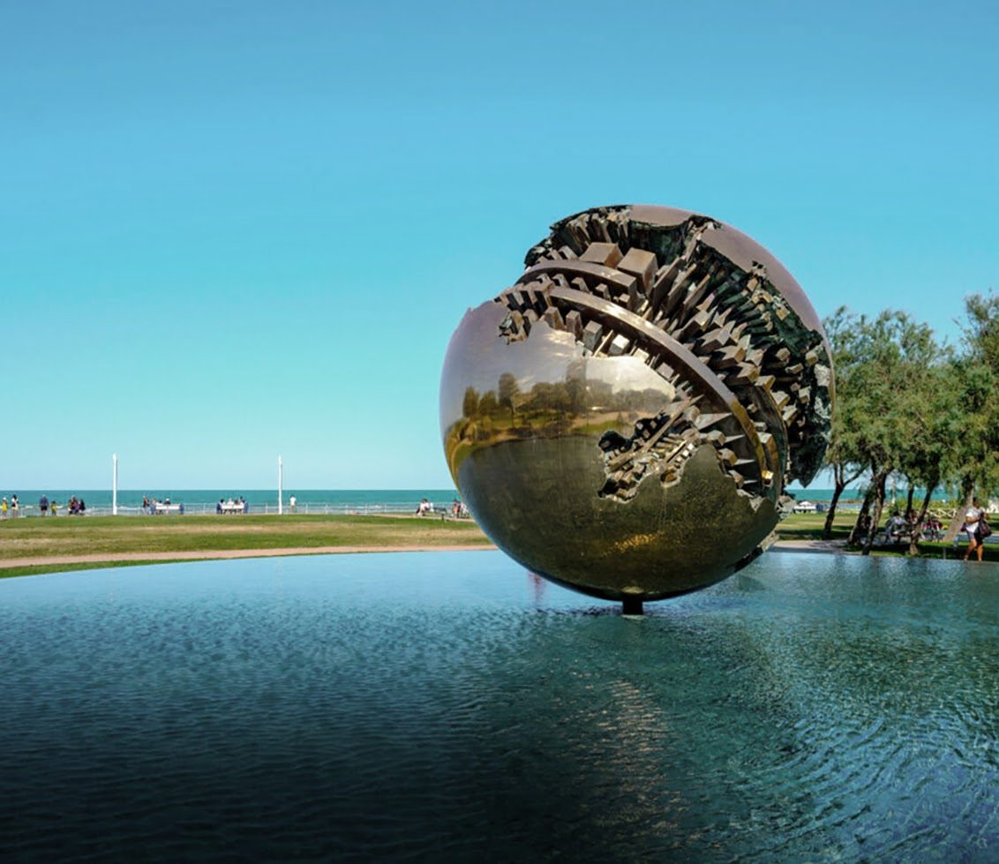

Pesaro sits on the Adriatic coast of Le Marche, and in 2024 it was Italian Capital of Culture. It is a town where ancient history meets contemporary art and music – and it deserves more than a quick stop.
The historic centre
Pesaro dates back to Roman times. Walk among Renaissance palaces and Baroque churches to the Ducal Palace, and step into the Cathedral of Santa Maria Assunta to see its beautiful mosaic floors.
Villa Imperiale
Just outside the city walls is one of the region’s best-kept secrets. Villa Imperiale was commissioned by Alessandro Sforza and completed in 1469, then enlarged in the early 1500s for Francesco Maria della Rovere to a design by Girolamo Genga. Legend says Emperor Frederick III laid its foundation stone in 1452 – hence the name. Inside are frescoes by artists such as Raffaellino del Colle and Dosso Dossi, and outside, Italian gardens.
The city of Rossini
Pesaro is the birthplace of Gioachino Rossini and a UNESCO City of Music. The Rossini Opera Festival and the Rossini Museum draw music lovers from all over the world, while the Centro Arti Visive Pescheria hosts contemporary exhibitions.
Nature, crafts and food
Monte San Bartolo Natural Park offers coastal trails, hiking, mountain biking, birdwatching and small medieval villages. In town, look for handmade jewellery and ceramics. At the table: seafood, crescia, local olive oil, casciotta di Urbino cheese, Bianchello del Metauro and Colli Pesaresi wines – and the famous Pizza Rossini, topped with boiled egg and mayonnaise, invented by a local bakery in the 1950s.